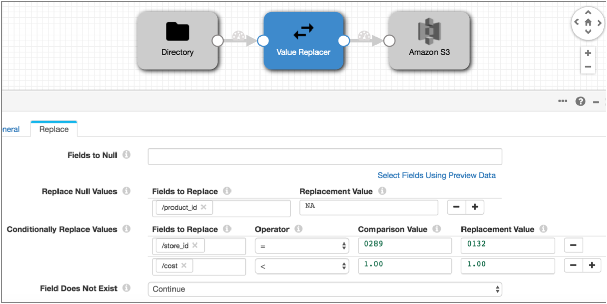

Value Replacer
- Replace field values with nulls, optionally based on a condition
- Replace null values in specified fields with constants
- Replace field values with constants based on a condition
When you configure the processor, you specify the fields that you want to use, and the conditions and replacement values when appropriate. You can list multiple fields for each type of value replacement. And you can configure error handling for when a field does not exist.
Processing Order
- Fields to Null - Replaces existing values with null values, optionally based on a condition.
- Replace Null Values - Replaces null values with the specified constants.
- Conditionally Replace Values - Replaces the specified values with constants based on a condition.
For example, in the following Value Replacer, the processor first replaces null values in the product_id field, then replaces the "0289" store ID with "0132". And finally, it replaces values less than 1.00 in the cost field with "1.00":

When you list multiple fields in a property, Value Replacer processes them in the listed order as well.
Replacing Values with Nulls
You can use Value Replacer to replace values in a field with null values. You can replace all values with nulls or you can replace values based on a condition.
${str:length(record:value('/stringField')) == 0}
${record:value('/intField') < 0}
Use the
Fields to Null property to replace values with nulls. When
you enter a condition, it applies to all listed fields. Replacing Values with Constants
You can replace values in a field with a constant, based on a simple condition.
You might use conditional replacement to update codes or other changed values, or to replace invalid values.
- Less than ( < ) - Converts all values less than the specified value to the replacement value.
- Greater than ( > ) - Converts all values greater than the specified value to the replacement value.
- Equals ( = ) - Converts the specified value to the replacement value.
- ALL - Converts all values in the field to the replacement value.
Use the Conditionally Replace Values property to replace values with a constant.
Data Types for Conditional Replacement
- Byte
- Double
- Float
- Integer
- Long
- Short
- String
Configuring a Value Replacer
Use a Value Replacer to replace null values in a field or to replace values in a field with nulls.
-
In the Properties panel, on the General tab, configure the
following properties:
General Property Description Name Stage name. Description Optional description. Required Fields 
Fields that must include data for the record to be passed into the stage. Tip: You might include fields that the stage uses.Records that do not include all required fields are processed based on the error handling configured for the pipeline.
Preconditions Conditions that must evaluate to TRUE to allow a record to enter the stage for processing. Click Add to create additional preconditions. Records that do not meet all preconditions are processed based on the error handling configured for the stage.
On Record Error Error record handling for the stage: - Discard - Discards the record.
- Send to Error - Sends the record to the pipeline for error handling.
- Stop Pipeline - Stops the pipeline. Not valid for cluster pipelines.
-
On the Replace tab, configure the following
properties:
Value Replacer Property Description Fields to Null 
One or more fields to replace with null values. Configure the following properties: - Fields - The fields to use.Tip: To use all fields, you can use the asterisk wildcard as follows: /*. You can also use the asterisk wildcard to represent array indices and map elements.
- Condition - An optional condition to use to replace
values with null values. When omitted, the processor
replaces all values in the field with null values.
Use an expression, such as: ${str:length(record:value('/stringField')) == 0}
Replace Null Values Replaces null values with constants. Click Add to include more fields. Configure the following properties: - Fields to Replace - Name of the field to use.Tip: To use all fields, you can use the asterisk wildcard as follows: /*. You can also use the asterisk wildcard to represent array indices and map elements.
- Replacement Value - Constant to replace null values in the field.
Conditionally Replace Values
Replaces the specified values with constants. Click Add to include more fields. Configure the following properties: - Fields to Replace - Name of the field to use.Tip: To use all fields, you can use the asterisk wildcard as follows: /*. You can also use the asterisk wildcard to represent array indices and map elements.
- Operator - Operator to use for the condition.
- Comparison Value - Constant to use for the condition.
- Replacement Value - Constant to replace values that match the condition.
Field Does Not Exist Determines how to handle records without the specified fields: - Continue - Passes the record with as much processing as possible.
- Send to error - Passes the record to the pipeline for error handling.
- Fields - The fields to use.